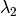

Getting Started¶
These tutorials do not attempt to make up for a graduate or undergraduate course in machine learning, but we do make a rapid overview of some important concepts (and notation) to make sure that we’re on the same page. You’ll also need to download the datasets mentioned in this chapter in order to run the example code of the up-coming tutorials.
Download¶
On each learning algorithm page, you will be able to download the corresponding files. If you want to download all of them at the same time, you can clone the git repository of the tutorial:
git clone git://github.com/lisa-lab/DeepLearningTutorials.git
Datasets¶
MNIST Dataset¶
The MNIST dataset consists of handwritten digit images and it is divided in 60,000 examples for the training set and 10,000 examples for testing. In many papers as well as in this tutorial, the official training set of 60,000 is divided into an actual training set of 50,000 examples and 10,000 validation examples (for selecting hyper-parameters like learning rate and size of the model). All digit images have been size-normalized and centered in a fixed size image of 28 x 28 pixels. In the original dataset each pixel of the image is represented by a value between 0 and 255, where 0 is black, 255 is white and anything in between is a different shade of grey.
Here are some examples of MNIST digits:


For convenience we pickled the dataset to make it easier to use in python. It is available for download here. The pickled file represents a tuple of 3 lists : the training set, the validation set and the testing set. Each of the three lists is a pair formed from a list of images and a list of class labels for each of the images. An image is represented as numpy 1-dimensional array of 784 (28 x 28) float values between 0 and 1 (0 stands for black, 1 for white). The labels are numbers between 0 and 9 indicating which digit the image represents. The code block below shows how to load the dataset.
import cPickle, gzip, numpy # Load the dataset f = gzip.open('mnist.pkl.gz','rb') train_set, valid_set, test_set = cPickle.load(f) f.close()When using the dataset, we usually divide it in minibatches (see Stochastic Gradient Descent). We encourage you to store the dataset into shared variables and access it based on the minibatch index, given a fixed and known batch size. The reason behind shared variables is related to using the GPU. There is a large overhead when copying data into the GPU memory. If you would copy data on request ( each minibatch individually when needed) as the code will do if you do not use shared variables, due to this overhead, the GPU code will not be much faster then the CPU code (maybe even slower). If you have your data in Theano shared variables though, you give Theano the possibility to copy the entire data on the GPU in a single call when the shared variables are constructed. Afterwards the GPU can access any minibatch by taking a slice from this shared variables, without needing to copy any information from the CPU memory and therefore bypassing the overhead. Because the datapoints and their labels are usually of different nature (labels are usually integers while datapoints are real numbers) we suggest to use different variables for labes and data. Also we recomand using different variables for the training set, validation set and testing set to make the code more readable (resulting in 6 different shared variables).
Since now the data is in one variable, and a minibatch is defined as a slice of that variable, it comes more natural to define a minibatch by indicating its index and its size. In our setup the batch size stays constant through out the execution of the code, therefore a function will actually require only the index to identify on which datapoints to work. The code below shows how to store your data and how to access a minibatch:
def shared_dataset(data_xy): """ Function that loads the dataset into shared variables The reason we store our dataset in shared variables is to allow Theano to copy it into the GPU memory (when code is run on GPU). Since copying data into the GPU is slow, copying a minibatch everytime is needed (the default behaviour if the data is not in a shared variable) would lead to a large decrease in performance. """ data_x, data_y = data_xy shared_x = theano.shared(numpy.asarray(data_x, dtype=theano.config.floatX)) shared_y = theano.shared(numpy.asarray(data_y, dtype=theano.config.floatX)) # When storing data on the GPU it has to be stored as floats # therefore we will store the labels as ``floatX`` as well # (``shared_y`` does exactly that). But during our computations # we need them as ints (we use labels as index, and if they are # floats it doesn't make sense) therefore instead of returning # ``shared_y`` we will have to cast it to int. This little hack # lets us get around this issue return shared_x, T.cast(shared_y, 'int32') test_set_x, test_set_y = shared_dataset(test_set) valid_set_x, valid_set_y = shared_dataset(valid_set) train_set_x, train_set_y = shared_dataset(train_set) batch_size = 500 # size of the minibatch # accessing the third minibatch of the training set data = train_set_x[2*500:3*500] label = train_set_y[2*500:3*500]

The data has to be stored as floats on the GPU ( the right dtype for storing on the GPU is given by theano.config.floatX). To get around this shortcomming for the labels, we store them as float, and then cast it to int.
Note
If you are running your code on the GPU and the dataset you are using is too large to fit in memory the code will crash. In such a case you should store the data in a shared variable. You can however store a sufficiently small chunk of your data (several minibatches) in a shared variable and use that during training. Once you got through the chunk, update the values it stores. This way you minimize the number of data transfers between CPU memory and GPU memory.
Notation¶
Dataset notation¶
We label data sets as  . When the distinction is important, we
indicate train, validation, and test sets as:
. When the distinction is important, we
indicate train, validation, and test sets as:  ,
and . The validation set
is used to perform model selection and hyper-parameter selection, whereas
the test set is used to evaluate the final generalization error and
compare different algorithms in an unbiased way.
,
and . The validation set
is used to perform model selection and hyper-parameter selection, whereas
the test set is used to evaluate the final generalization error and
compare different algorithms in an unbiased way.
The tutorials mostly deal with classification problems, where each data set
is an indexed set of pairs . We
use superscripts to distinguish training set examples: is thus the i-th training example of dimensionality  . Similarly,
is the i-th label assigned to input
. It is straightforward to extend these examples to
ones where has other types (e.g. Gaussian for regression,
or groups of multinomials for predicting multiple symbols).
. Similarly,
is the i-th label assigned to input
. It is straightforward to extend these examples to
ones where has other types (e.g. Gaussian for regression,
or groups of multinomials for predicting multiple symbols).
Math Conventions¶
 : upper-case symbols refer to a matrix unless specified otherwise
: upper-case symbols refer to a matrix unless specified otherwise- : element at i-th row and j-th column of matrix
- : vector, i-th row of matrix
- : vector, j-th column of matrix
 : lower-case symbols refer to a vector unless specified otherwise
: lower-case symbols refer to a vector unless specified otherwise- : i-th element of vector
List of Symbols and acronyms¶
- : number of input dimensions.
- : number of hidden units in the
 -th layer.
-th layer. - , : classification function associated with a model , defined as .
Note that we will often drop the
 subscript.
subscript. - L: number of labels.
- : log-likelihood
of the model defined by parameters .
- empirical loss of the prediction function f
parameterized by on data set .
- NLL: negative log-likelihood
- : set of all parameters for a given model
Python Namespaces¶
Tutorial code often uses the following namespaces:
import theano
import theano.tensor as T
import numpy
A Primer on Supervised Optimization for Deep Learning¶
What’s exciting about Deep Learning is largely the use of unsupervised learning of deep networks. But supervised learning also plays an important role. The utility of unsupervised pre-training is often evaluated on the basis of what performance can be achieved after supervised fine-tuning. This chapter reviews the basics of supervised learning for classification models, and covers the minibatch stochastic gradient descent algorithm that is used to fine-tune many of the models in the Deep Learning Tutorials. Have a look at these introductory course notes on gradient-based learning for more basics on the notion of optimizing a training criterion using the gradient.
Learning a Classifier¶
Zero-One Loss¶
The models presented in these deep learning tutorials are mostly used for classification. The objective in training a classifier is to minimize the number of errors (zero-one loss) on unseen examples. If is the prediction function, then this loss can be written as:
where either is the training
set (during training)
or
(to avoid biasing the evaluation of validation or test error). is the
indicator function defined as:
In this tutorial,  is defined as:
is defined as:
In python, using Theano this can be written as :
# zero_one_loss is a Theano variable representing a symbolic
# expression of the zero one loss ; to get the actual value this
# symbolic expression has to be compiled into a Theano function (see
# the Theano tutorial for more details)
zero_one_loss = T.sum(T.neq(T.argmax(p_y_given_x),y))
Negative Log-Likelihood Loss¶
Since the zero-one loss is not differentiable, optimizing it for large models (thousands or millions of parameters) is prohibitively expensive (computationally). We thus maximize the log-likelihood of our classifier given all the labels in a training set.
The likelihood of the correct class is not the same as the number of right predictions, but from the point of view of a randomly initialized classifier they are pretty similar. Remember that likelihood and zero-one loss are different objectives; you should see that they are corralated on the validation set but sometimes one will rise while the other falls, or vice-versa.
Since we usually speak in terms of minimizing a loss function, learning will thus attempt to minimize the negative log-likelihood (NLL), defined as:
The NLL of our classifier is a differentiable surrogate for the zero-one loss, and we use the gradient of this function over our training data as a supervised learning signal for deep learning of a classifier.
This can be computed using the following line of code :
# NLL is a symbolic variable ; to get the actual value of NLL, this symbolic
# expression has to be compiled into a Theano function (see the Theano
# tutorial for more details)
NLL = -T.sum(T.log(p_y_given_x)[T.arange(y.shape[0]),y])
# note on syntax: T.arange(y.shape[0]) is a vector of integers [0,1,2,...,len(y)].
# Indexing a matrix M by the two vectors [0,1,...,K], [a,b,...,k] returns the
# elements M[0,a], M[1,b], ..., M[K,k] as a vector. Here, we use this
# syntax to retrieve the log-probability of the correct labels, y.
Stochastic Gradient Descent¶
What is ordinary gradient descent? it is a simple algorithm in which we repeatedly make small steps downward on an error surface defined by a loss function of some parameters. For the purpose of ordinary gradient descent we consider that the training data is rolled into the loss function. Then the pseudocode of this algorithm can be described as :
# GRADIENT DESCENT
while True:
loss = f(params)
d_loss_wrt_params = ... # compute gradient
params -= learning_rate * d_loss_wrt_params
if <stopping condition is met>:
return params
Stochastic gradient descent (SGD) works according to the same principles as ordinary gradient descent, but proceeds more quickly by estimating the gradient from just a few examples at a time instead of the entire training set. In its purest form, we estimate the gradient from just a single example at a time.
# STOCHASTIC GRADIENT DESCENT
for (x_i,y_i) in training_set:
# imagine an infinite generator
# that may repeat examples (if there is only a finite training set)
loss = f(params, x_i, y_i)
d_loss_wrt_params = ... # compute gradient
params -= learning_rate * d_loss_wrt_params
if <stopping condition is met>:
return params
The variant that we recommend for deep learning is a further twist on stochastic gradient descent using so-called “minibatches”. Minibatch SGD works identically to SGD, except that we use more than one training example to make each estimate of the gradient. This technique reduces variance in the estimate of the gradient, and often makes better use of the hierarchical memory organization in modern computers.
for (x_batch,y_batch) in train_batches:
# imagine an infinite generator
# that may repeat examples
loss = f(params, x_batch, y_batch)
d_loss_wrt_params = ... # compute gradient using theano
params -= learning_rate * d_loss_wrt_params
if <stopping condition is met>:
return params
There is a tradeoff in the choice of the minibatch size  . The
reduction of variance and use of SIMD instructions helps most when increasing
from 1 to 2, but the marginal improvement fades rapidly to nothing.
With large , time is wasted in reducing the variance of the gradient
estimator, that time would be better spent on additional gradient steps.
An optimal is model-, dataset-, and hardware-dependent, and can be
anywhere from 1 to maybe several hundreds. In the tutorial we set it to 20,
but this choice is almost arbitrary (though harmless).
. The
reduction of variance and use of SIMD instructions helps most when increasing
from 1 to 2, but the marginal improvement fades rapidly to nothing.
With large , time is wasted in reducing the variance of the gradient
estimator, that time would be better spent on additional gradient steps.
An optimal is model-, dataset-, and hardware-dependent, and can be
anywhere from 1 to maybe several hundreds. In the tutorial we set it to 20,
but this choice is almost arbitrary (though harmless).
Note
If you are training for a fixed number of epochs, the minibatch size becomes important because it controls the number of updates done to your parameters. Training the same model for 10 epochs using a batch size of 1 yields completely different results compared to training for the same 10 epochs but with a batchsize of 20. Keep this in mind when switching between batch sizes and be prepared to tweak all the other parameters acording to the batch size used.
All code-blocks above show pseudocode of how the algorithm looks like. Implementing such algorithm in Theano can be done as follows :
# Minibatch Stochastic Gradient Descent
# assume loss is a symbolic description of the loss function given
# the symbolic variables params (shared variable), x_batch, y_batch;
# compute gradient of loss with respect to params
d_loss_wrt_params = T.grad(loss, params)
# compile the MSGD step into a theano function
updates = { params: params - learning_rate * d_loss_wrt_params}
MSGD = theano.function([x_batch,y_batch], loss, updates = updates)
for (x_batch, y_batch) in train_batches:
# here x_batch and y_batch are elements of train_batches and
# therefore numpy arrays; function MSGD also updates the params
print('Current loss is ', MSGD(x_batch, y_batch))
if stopping_condition_is_met:
return params
Regularization¶
There is more to machine learning than optimization. When we train our model from data we are trying to prepare it to do well on new examples, not the ones it has already seen. The training loop above for MSGD does not take this into account, and may overfit the training examples. A way to combat overfitting is through regularization. There are several techniques for regularization; the ones we will explain here are L1/L2 regularization and early-stopping.
L1 and L2 regularization¶
L1 and L2 regularization involve adding an extra term to the loss function, which penalizes certain parameter configurations. Formally, if our loss function is:
then the regularized loss will be:
or, in our case
where
which is the norm of .  is a hyper-parameter which
controls the relative importance of the regularization parameter. Commonly used values for p
are 1 and 2, hence the L1/L2 nomenclature. If p=2, then the regularizer is
also called “weight decay”.
is a hyper-parameter which
controls the relative importance of the regularization parameter. Commonly used values for p
are 1 and 2, hence the L1/L2 nomenclature. If p=2, then the regularizer is
also called “weight decay”.
In principle, adding a regularization term to the loss will encourage smooth network mappings in a neural network (by penalizing large values of the parameters, which decreases the amount of nonlinearity that the network models). More intuitively, the two terms (NLL and ) correspond to modelling the data well (NLL) and having “simple” or “smooth” solutions (). Thus, minimizing the sum of both will, in theory, correspond to finding the right trade-off between the fit to the training data and the “generality” of the solution that is found. To follow Occam’s razor principle, this minimization should find us the simplest solution (as measured by our simplicity criterion) that fits the training data.
Note that the fact that a solution is “simple” does not mean that it will generalize well. Empirically, it was found that performing such regularization in the context of neural networks helps with generalization, especially on small datasets. The code block below shows how to compute the loss in python when it contains both a L1 regularization term weighted by and L2 regularization term weighted by 
# symbolic Theano variable that represents the L1 regularization term
L1 = T.sum(abs(param))
# symbolic Theano variable that represents the squared L2 term
L2_sqr = T.sum(param**2)
# the loss
loss = NLL + lambda_1 * L1 + lambda_2 * L2
Early-Stopping¶
Early-stopping combats overfitting by monitoring the model’s performance on a validation set. A validation set is a set of examples that we never use for gradient descent, but which is also not a part of the test set. The validation examples are considered to be representative of future test examples. We can use them during training because they are not part of the test set. If the model’s performance ceases to improve sufficiently on the validation set, or even degrades with further optimization, then the heuristic implemented here gives up on much further optimization.
The choice of when to stop is a judgement call and a few heuristics exist, but these tutorials will make use of a strategy based on a geometrically increasing amount of patience.
# early-stopping parameters
patience = 5000 # look as this many examples regardless
patience_increase = 2 # wait this much longer when a new best is
# found
improvement_threshold = 0.995 # a relative improvement of this much is
# considered significant
validation_frequency = min(n_train_batches, patience/2)
# go through this many
# minibatches before checking the network
# on the validation set; in this case we
# check every epoch
best_params = None
best_validation_loss = numpy.inf
test_score = 0.
start_time = time.clock()
done_looping = False
epoch = 0
while (epoch < n_epochs) and (not done_looping):
epoch = epoch + 1
for minibatch_index in xrange(n_train_batches):
d_loss_wrt_params = ... # compute gradient
params -= learning_rate * d_loss_wrt_params # gradient descent
# iteration number
iter = epoch * n_train_batches + minibatch_index
# note that if we do `iter % validation_frequency` it will be
# true for iter = 0 which we do not want
if iter and iter % validation_frequency == 0:
this_validation_loss = ... # compute zero-one loss on validation set
if this_validation_loss < best_validation_loss:
# improve patience if loss improvement is good enough
if this_validation_loss < best_validation_loss*improvement_threshold:
patience = max(patience, iter * patience_increase)
best_params = copy.deepcopy(params)
best_validation_loss = this_validation_loss
if patience <= iter:
done_looping = True
break
# POSTCONDITION:
# best_params refers to the best out-of-sample parameters observed during the optimization
If we run out of batches of training data before running out of patience, then we just go back to the beginning of the training set and repeat.
Note
The validation_frequency should always be smaller than the patience. The code should check at least two times how it performs before running out of patience. This is the reason we used the formulation validation_frequency = min( value, patience/2.)
Note
This algorithm could possibly be improved by using a test of statistical significance rather than the simple comparison, when deciding whether to increase the patience.
Testing¶
After the loop exits, the best_params variable refers to the best-performing model on the validation set. If we repeat this procedure for another model class, or even another random initialization, we should use the same train/valid/test split of the data, and get other best-performing models. If we have to choose what the best model class or the best initialization was, we compare the best_validation_loss for each model. When we have finally chosen the model we think is the best (on validation data), we report that model’s test set performance. That is the performance we expect on unseen examples.
Recap¶
That’s it for the optimization section.
The technique of early-stopping requires us to partition the set of examples into three sets
(training ,
validation ,
test ).
The training set is used for minibatch stochastic gradient descent on the
differentiable approximation of the objective function.
As we perform this gradient descent, we periodically consult the validation set
to see how our model is doing on the real objective function (or at least our
empirical estimate of it).
When we see a good model on the validation set, we save it.
When it has been a long time since seeing a good model, we abandon our search
and return the best parameters found, for evaluation on the test set.
Theano/Python Tips¶
Loading and Saving Models¶
When you’re doing experiments, it can take hours (sometimes days!) for gradient-descent to find the best parameters. You will want to save those weights once you find them. You may also want to save your current-best estimates as the search progresses.
Pickle the numpy ndarrays from your shared variables
The best way to save/archive your model’s parameters is to use pickle or deepcopy the ndarray objects. So for example, if your parameters are in shared variables w, v, u, then your save command should look something like:
>>> import cPickle
>>> save_file = open('path', 'wb') # this will overwrite current contents
>>> cPickle.dump(w.get_value(borrow=True), save_file, -1) # the -1 is for HIGHEST_PROTOCOL
>>> cPickle.dump(v.get_value(borrow=True), save_file, -1) # .. and it triggers much more efficient
>>> cPickle.dump(u.get_value(borrow=True), save_file, -1) # .. storage than numpy's default
>>> save_file.close()
Then later, you can load your data back like this:
>>> save_file = open('path')
>>> w.set_value(cPickle.load(save_file), borrow=True)
>>> v.set_value(cPickle.load(save_file), borrow=True)
>>> u.set_value(cPickle.load(save_file), borrow=True)
This technique is a bit verbose, but it is tried and true. You will be able to load your data and render it in matplotlib without trouble, years after saving it.
Do not pickle your training or test functions for long-term storage
Theano functions are compatible with Python’s deepcopy and pickle mechanisms, but you should not necessarily pickle a Theano function. If you update your Theano folder and one of the internal changes, then you may not be able to un-pickle your model. Theano is still in active development, and the internal APIs are subject to change. So to be on the safe side – do not pickle your entire training or testing functions for long-term storage. The pickle mechanism is aimed at for short-term storage, such as a temp file, or a copy to another machine in a distributed job.
Read more about serialization in Theano, or Python’s pickling.
Plotting Intermediate Results¶
Visualizations can be very powerful tools for understanding what your model or training algorithm is doing. You might be tempted to insert matplotlib plotting commands, or PIL image-rendering commands into your model-training script. However, later you will observe something interesting in one of those pre-rendered images and want to investigate something that isn’t clear from the pictures. You’ll wished you had saved the original model.
If you have enough disk space, your training script should save intermediate models and a visualization script should process those saved models.
You already have a model-saving function right? Just use it again to save these intermediate models.
Libraries you’ll want to know about: Python Image Library (PIL), matplotlib.